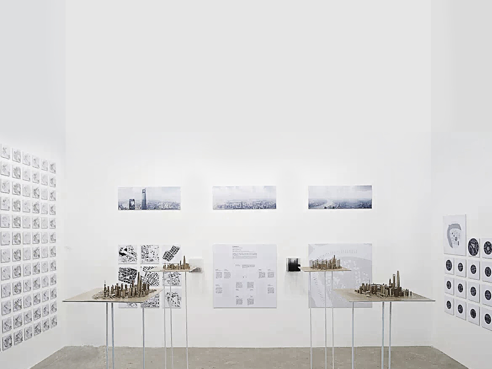
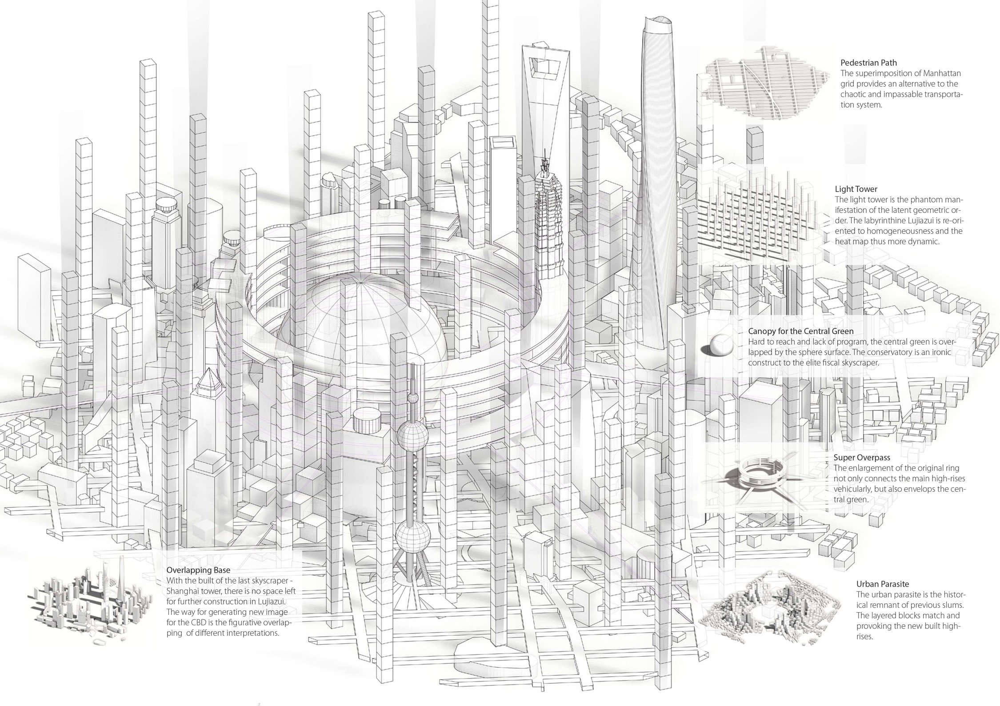

Collect, analyze, and visualize data from Shanghai CBD
Urban Research
Data Visualization
Group Coordinator
Graphic Designer
Yixin PAN, Nan HU, Yuetong ZHAO
Yujing HE, Yuze WANG
This research focused on Shanghai CBD, where various people and activities happened. We tried to collect information and perceptions of people in this area and interpreted the information in ways of visualization and digital fabrication. The research resulted in 3D printing, drone photography, graphics, and physical models, which are presented in 2015 Shanghai West Bund Biennale.
Final 3D Printing
In less than one century, Lujiazui grows from industrial land, farm, slums to one of the most prosperous district in the world, during which the huge leap in the 1990s brought prestige as well as various problems to this land. Architects, planners, policy makers, and people who live, work, or travel around constantly reshape Lujiazui in their own way.
The lack of diversity in the hot-spots below shows the improperness of city disperse. Visualized Lujiazui based on the activity of different groups in Lujiazui and presents the various figurative interpretation which generates the new image of the CBD.
The irregular crossroad typology is one of the main reasons for causing the activity disperse above. In Lujiazui, no intersection is perpendicular.
Just like Venice in Calvino's word, vagueness never obstructs the reading of a city, instead, its complexity and change do. Synecdoche, the figurative way of interpretations, explores a new way to capture the essence of Lujiazui between the individual and the collective, the partial and the whole, the abstract and the concrete, the realistic and the futuristic, thus myriad of cities birthed.
Ring City
Needle City
Grid City
Sphere City
We take various ways to delineate the new city based on the human research. Below are the overlapping of different interpretations and how they come together to form a new city.
